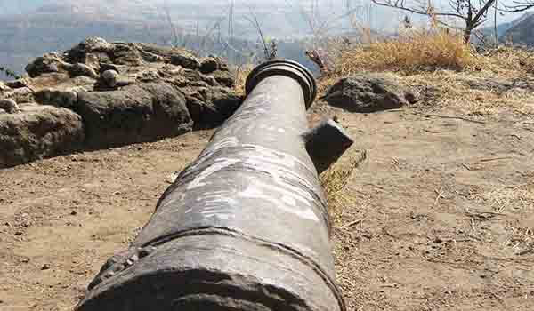
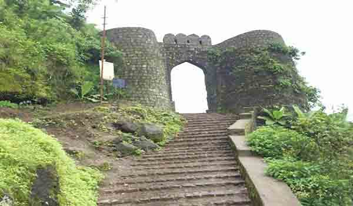

सिंहगड किंवा कोंडाना हा पुण्याच्या नैऋत्य भागातील एक अभिमान आहे. प्राचीन लढाईच्या काळात महाराष्ट्राला आधार देणारा हा किल्ला होता. महान सह्याद्रीची भुलेश्वर रांगेत ही ऐतिहासिक वास्तू आहे. हे समुद्रसपाटीपासून १,३१२ मीटर उंचीवर आहे. सिंहगडला सर्व बाजूंनी संरक्षण देण्यासाठी स्वतःचे भयंकर तीव्र उतार आहेत.
या किल्ल्याला दोन प्रवेशद्वार आहेत - एक ईशान्य भागात (पुणे दरवाजा) आणि दुसरे दक्षिण-पूर्वेकडील भागात (कल्याण दरवाजा). काही स्त्रोतांच्या म्हणण्यानुसार हा किल्ला २००० वर्षांपूर्वी बांधला गेला असवा. हा किल्ला पूर्वी कोंढाणा म्हणून ओळखला जात असे. शतकानुशतके अनेक लढाया झाल्या आहेत आणि सर्वात महत्त्वाचा म्हणजे १६७० मधील सिंहगडची लढाई होती.
तेथील कौंडिनेश्वर मंदिराच्या भिंतींवर कोरलेल्या कोरीव कामांवरून हे स्पष्ट होते. सिंहगड हा खरा पर्यटन स्थळांचा वारसा आहे. छत्रपती शिवाजी महाराजांच्या काळातील किल्ल्याची एक कुशल संरक्षक म्हणून ओळखल्या जाणाऱ्या सुभेदार तानाजी मालुसरे या किल्ल्यात काही मोहक मोनोलिथ आहेत. पुणे दरवाजा, कल्याण दरवाजा, टिळक बंगला, हवा पॉईंट, कडे लॉट, अमृतेश्वर मंदिर, सुभेदार तानाजी समाधी आणि स्मारक आजही या किल्ल्याचे वैशिष्ट्य वाढवते.